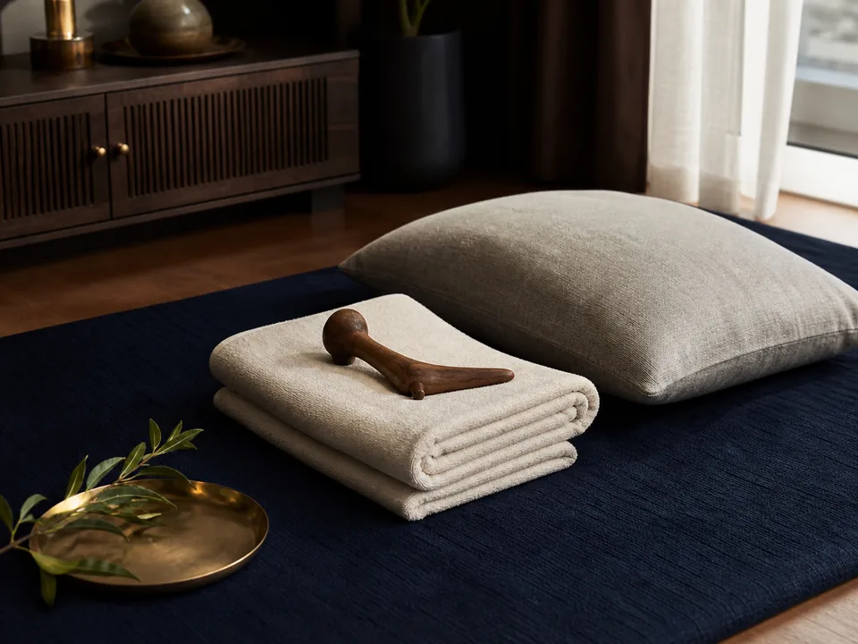
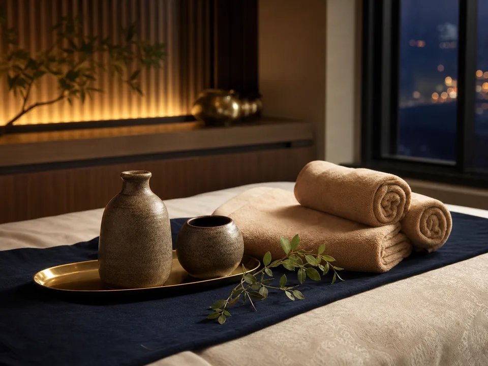

평택 전 지역 방문
생활권과 숙소 위치를 확인해 가능한 시간을 안내합니다.

PYEONGTAEK VISIT CARE
평택출장마사지 전문 방문 케어는 고덕·송탄·소사벌·평택역·안중·포승 등 평택 전 지역으로 방문합니다. 선입금이나 예약금 없이 이용 내용을 확인한 후 관리사를 배정합니다.
생활권과 숙소 위치를 확인해 가능한 시간을 안내합니다.
코스와 기본 비용을 예약 확정 전에 먼저 확인합니다.
현재 운영 기준상 예약금이나 선입금을 요청하지 않습니다.
관리사 도착 후 예약 코스를 다시 확인하고 진행합니다.
COURSE & PRICE
필요한 방식과 시간을 비교한 뒤 선택하세요. 예약 전 현재 지역과 희망 시간을 기준으로 최종 가능 여부를 다시 확인합니다.
DRY CARE
오일 없이 편한 복장 위에서 압과 스트레칭을 조절하는 기본 관리입니다.
AROMA CARE
부드러운 오일을 사용해 일정한 리듬과 편안한 압으로 진행하는 관리입니다.
SIGNATURE CARE
충분한 시간 동안 압과 오일 관리의 구성을 상담해 진행하는 복합 코스입니다.
정확한 이용 가능 여부와 비용은 예약 전 상담 시 다시 안내합니다.
VISIT CARE
컨디션과 선호하는 압, 이용 장소를 알려주면 맞는 코스를 비교해 안내합니다. 아래 내용은 의료 행위가 아닌 일반적인 휴식·바디 케어 서비스 기준입니다.

01DRY CARE
별도 오일 없이 편한 복장 위에서 압과 스트레칭의 강도를 조절해 진행합니다. 오래 앉아 있거나 활동 후 차분하게 몸을 쉬고 싶은 분, 끈적임 없이 깔끔한 관리를 원하는 분이 선택하기 좋습니다.
AROMA CARE
부드러운 오일을 사용해 일정한 리듬과 편안한 압으로 관리합니다. 자극이 강한 방식보다 여유로운 휴식을 선호하거나 샤워 가능한 자택·호텔에서 느긋하게 시간을 보내고 싶은 분에게 알맞습니다.

03SIGNATURE CARE
타이 방식의 압과 오일 관리 구성을 한 코스 안에서 상담해 진행합니다. 한 가지 방식보다 다양한 리듬을 원하거나 90분 이상 충분한 시간을 두고 선호 부위를 중심으로 요청하고 싶은 분에게 적합합니다.
HOME VISIT
이동하지 않고 익숙한 자택이나 머무는 숙소에서 예약한 코스를 이용하는 방문형 서비스입니다. 고덕·송탄·안중 등 평택 생활권의 출입과 주차 조건을 미리 공유하면 가능한 방문시간을 확인해 안내합니다.
이용 가능 장소 확인SERVICE AREA
평택출장마사지 방문시간은 거리만이 아니라 교통, 주차, 건물 출입 방식에 따라 달라집니다. 예약할 때 동 또는 가까운 건물명을 알려주면 더 정확히 확인할 수 있습니다.
고덕동, 장당동, 지제역 인근 아파트와 오피스텔, 숙박시설로 방문합니다. 교대 근무시간이나 단지 출입 조건을 미리 알려주면 가능한 방문시간을 확인해 안내합니다.
고덕출장마사지 상세 안내송탄역과 서정리역 생활권, 신장동의 주거지와 숙박시설을 함께 확인합니다. 골목 주차나 심야 출입 제한이 있는 건물은 예약할 때 진입 방법을 알려주세요.
송탄출장마사지 상세 안내소사벌 상업지구 주변 오피스텔과 비전동·동삭동 대단지 아파트를 방문합니다. 단지 동·호수와 방문 차량 등록 방식이 있으면 함께 전달해 주세요.
소사벌출장마사지 상세 안내평택역 주변 호텔과 통복동·합정동 주거 지역으로 이동합니다. 역세권은 시간대에 따라 차량 흐름이 달라 숙소명과 희망 시작시간을 함께 알려주면 좋습니다.
평택역출장마사지 상세 안내안중읍 주거지와 포승 산업단지 인근 숙소, 청북 신도시 생활권을 확인해 방문합니다. 평택 중심권보다 이동시간이 길 수 있어 희망시간보다 여유 있게 문의해 주세요.
안중출장마사지 상세 안내 포승출장마사지 상세 안내팽성읍과 안정리의 주택, 아파트, 장기 체류 숙소를 방문 범위로 안내합니다. 보안 게이트나 외부인 확인 절차가 있는 곳은 출입 가능한 방법을 먼저 확인해 주세요.
팽성출장마사지 상세 안내오성면과 진위면의 외곽 주거지, 세교동 아파트 생활권을 나누어 배정 가능 여부를 확인합니다. 정확한 위치와 주차 가능 여부를 알려주면 이동 동선을 먼저 살펴봅니다.
오성·진위출장마사지 상세 안내AVAILABLE PLACES
평택 홈타이 및 출장안마 예약 전, 관리 공간과 출입 조건을 미리 확인하면 배정과 방문 안내가 한결 원활합니다.
편하게 누울 공간을 정리하고, 공동현관 호출과 방문 주차 등록 방법을 알려주세요.
외부인 객실 출입 가능 여부를 프런트에 확인하고 호텔명과 객실 번호를 전달해 주세요.
정확한 숙소명과 지점, 객실 번호를 확인하고 주차장 또는 입구 위치를 공유해 주세요.
출입 카드나 방문 차량 등록이 필요한지 확인하고, 로비 호출 방식을 미리 안내해 주세요.
기숙사·레지던스 등은 외부인 출입 규정을 먼저 확인하고 가능한 만남 장소를 정해 주세요.
HOW TO BOOK
복잡한 가입 없이 지역, 시간, 코스 세 가지만 전달하면 됩니다. 평택출장안마 상담에서 가능한 조건을 확인한 뒤 예약을 확정합니다.
현재 동네와 희망 시작시간, 이용 장소를 알려주세요.
원하는 시간과 방식에 맞춰 코스와 비용을 확인합니다.
배정 가능 여부와 예상 방문시간을 다시 안내합니다.
예약한 코스와 압, 오일 사용 여부를 한 번 더 확인합니다.
관리를 진행한 뒤 상담에서 안내한 방식으로 결제합니다.
BEFORE BOOKING
서로 편안하고 안전한 방문을 위해 아래 내용을 확인합니다. 실제 운영 조건은 상담 시 안내가 우선하며, 변경되는 사항은 예약 확정 전에 알려드립니다.
현재 운영 기준상 먼저 송금을 요청하지 않습니다.
관리사 도착 후 예약 내용과 결제 방식을 다시 확인합니다.
배정과 이동 전 가능한 빨리 상담 채널로 알려주세요.
건물 출입과 방문 차량 등록 방법을 함께 알려주세요.
안전한 진행이 어렵다고 판단되면 방문 또는 이용이 제한될 수 있습니다.
불법적이거나 안내 범위를 벗어난 요청은 명확히 거절합니다.
평택출장마사지의 기본 방문 범위는 고덕신도시, 송탄, 소사벌, 평택역, 안중, 포승을 포함한 평택 전 지역입니다. 외곽 지역은 현재 위치와 희망 시간을 알려주시면 가능 여부를 확인합니다.
전화 또는 문자로 현재 지역, 희망 시간, 원하는 코스를 전달해 주세요. 이용 가능 여부와 비용, 예상 방문시간을 확인한 뒤 예약을 확정합니다.
상담은 24시간 가능하도록 운영할 예정이며, 실제 방문 가능 여부는 시간대와 지역, 당일 배정 상황에 따라 달라질 수 있습니다. 늦은 시간에는 출입과 주차 조건도 함께 알려주세요.
현재 안내 기준으로 예약금과 선입금은 받지 않으며 관리사 도착 후 코스를 다시 확인합니다. 실제 결제 방식은 예약 상담 시 최종 안내를 확인해 주세요.
평택 기본 방문 지역의 비용 조건은 상담 시 코스 가격과 함께 안내합니다. 외곽이나 특수한 이동 조건이 있는 경우 추가 비용 여부를 예약 확정 전에 먼저 알려드립니다.
자택, 호텔, 모텔, 오피스텔과 장기 숙소에서 이용할 수 있습니다. 숙박시설은 외부인 출입 가능 여부와 객실 번호, 로비 호출 방법을 미리 확인해 주세요.
편안히 이용할 수 있는 공간과 실내 온도를 준비하고, 주차 또는 출입 방법을 전달해 주세요. 아로마 코스라면 샤워 가능 여부와 오일 사용이 가능한 환경인지 확인하면 좋습니다.
배정과 준비 상황에 따라 방문 전에 코스를 변경할 수 있습니다. 시간 연장이나 오일 코스로의 변경을 원하면 관리사 출발 전 상담 채널로 요청해 주세요.
방문시간은 출발 위치, 교통, 기상, 관리사 배정 상황에 따라 달라집니다. 예약 시 예상 시간을 안내하고 이동 상황에 변동이 생기면 다시 알려드립니다.
현재 안내 기준은 관리사 도착 후 예약한 코스를 확인하고, 관리가 끝난 뒤 상담 시 안내된 방식으로 결제하는 것입니다. 가능한 결제 수단은 예약 전에 확인해 주세요.